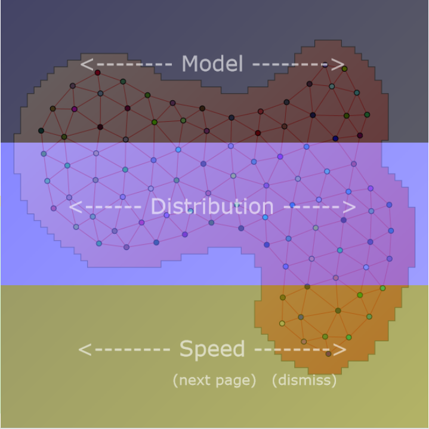
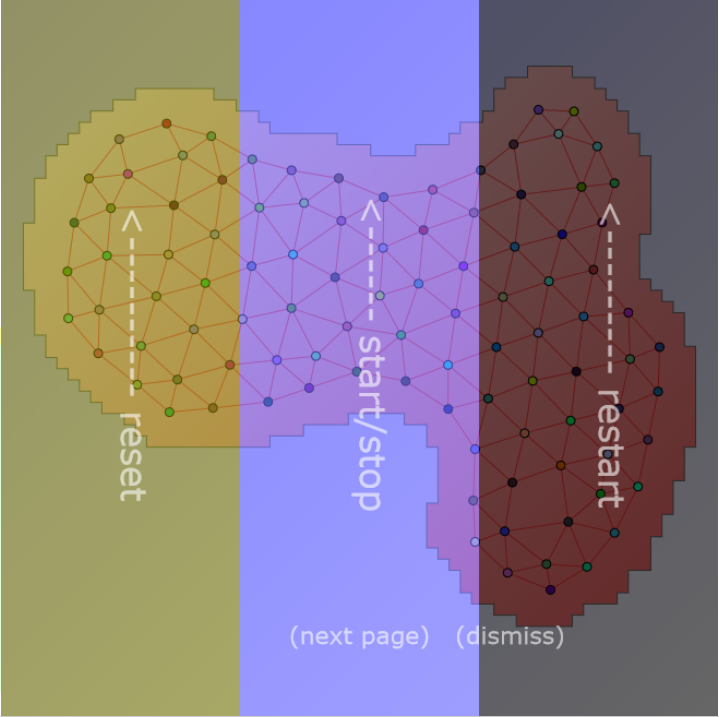
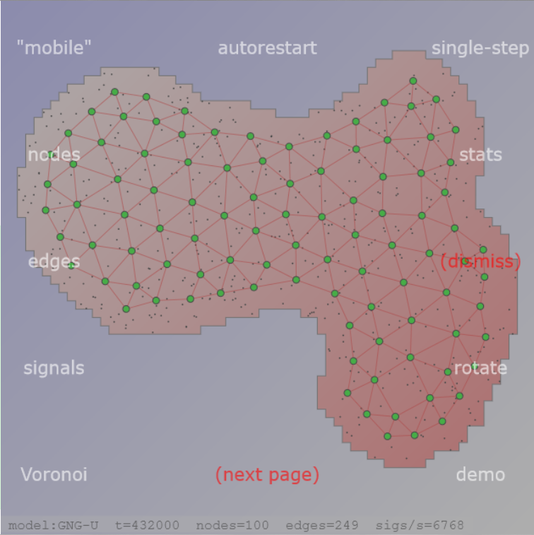

See also the section on Keyboard/Wheel Control. In 3D-mode the interaction is mainly concerned with zoom and perspective.
The canvas is partitioned into three horizontal zones of equal size. Each zone corresponds to one parameter (top: model, middle: distribution, bottom: simulation speed). Horizontal swiping (on a touch device) or horizontal mouse-dragging (on a normal desktop device) changes the corresponding parameter.
The canvas is also partitioned into three vertical zones of equal size. Each zone corresponds to one function (left: reset(), center: start()/stop(), right: restartFun()=reset()+start()). Vertical up-swiping (on a touch device) or vertical upward-dragging with the mouse(on a normal desktop device) invokes the corresponding function.
Finally, also some click-sensitive areas have been defined to toggle certain options or invoke function. A "click" is a short touch without move on a touch device or a normal single-click with the mouse.
As a reminder of the touch/mouse interface the overlays shown above can be toggled by clicking on an unused area of the canvas (no nodes, no special click-sensitive location), e.g. the center of the canvas. Then clicking on "(next page)" leads to the next overlay.